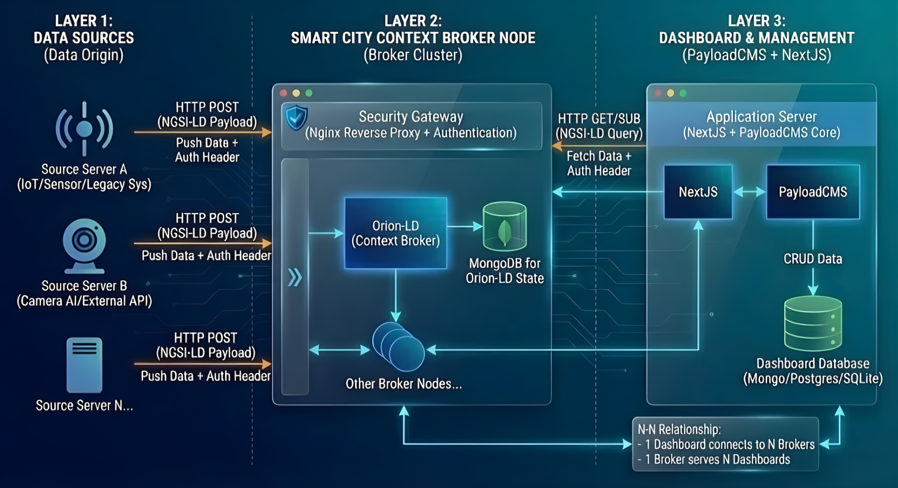

Architecture Overview
Understanding LegoCity's architecture helps you make informed decisions about customization and deployment.
System Architecture

Three-layer architecture: Data Sources → Smart City Context Broker → Dashboard & Management
Three-Layer Design
1. Context & Data Layer
Purpose: Single source of truth for city information
Components:
- NGSI-LD Context Broker (Orion-LD)
- Smart Data Models - Standardized schemas
- Real-time Updates - Subscriptions and notifications
Key Concepts:
{
"id": "urn:ngsi-ld:Sensor:001",
"type": "AirQualitySensor",
"location": {
"type": "Point",
"coordinates": [105.7851, 10.0303]
},
"pm25": {
"type": "Property",
"value": 35.2,
"observedAt": "2024-01-15T10:30:00Z"
}
}
Responsibilities:
- Store city entities (sensors, zones, services)
- Manage relationships between entities
- Handle temporal queries
- Provide standardized API (NGSI-LD)
2. UI & Content Layer
Purpose: Configure and render dashboard interfaces
Components:
- Next.js 15 - React framework with App Router
- PayloadCMS 3.x - Headless CMS
- MongoDB - Content database
- Mapbox GL JS - Interactive maps
Key Features:
a) Block-Based UI
// Pages composed from blocks
interface Page {
title: string;
blocks: Array<ArchiveBlock | MediaBlock | CallToActionBlock | ContentBlock>;
}
b) Dynamic Configuration
- Pages, map views, layers stored in PayloadCMS
- No hard-coded dashboards
- Runtime configuration changes
c) Responsive Design
- Mobile-first approach
- Tailwind CSS styling
- Accessible components
3. Integration Layer
Purpose: Connect external services and enhance functionality
Components:
- API Proxies - Secure external API access
- Authentication - JWT-based auth
- AI Assistants - Optional content helpers
- Search - Full-text search integration
Security Patterns:
// API keys stored server-side
// Frontend proxies requests
fetch("/api/proxy/geocode", {
body: JSON.stringify({ address }),
headers: { "Content-Type": "application/json" },
});
Data Flow
Pushing Data from IoT Sources
sequenceDiagram
participant Source as Source Server<br/>(IoT/Sensor/Camera)
participant Gateway as Security Gateway<br/>(Nginx)
participant Broker as Orion-LD<br/>(Context Broker)
participant MongoDB
participant OtherNodes as Other Broker Nodes
Source->>Gateway: HTTP POST<br/>(NGSI-LD Payload)<br/>Push Data + Auth Header
Gateway->>Gateway: Validate Auth Header
Gateway->>Broker: Forward entity data
Broker->>MongoDB: Store/Update entity
MongoDB-->>Broker: Confirm
Broker->>OtherNodes: Replicate state (optional)
Broker-->>Gateway: 201 Created / 204 Updated
Gateway-->>Source: Success responseReading City Data
sequenceDiagram
participant User
participant AppServer as Application Server<br/>(NextJS + PayloadCMS)
participant Gateway as Security Gateway<br/>(Nginx)
participant Broker as Orion-LD<br/>(Context Broker)
participant MongoDB
User->>AppServer: Load dashboard page
AppServer->>AppServer: Fetch page config from PayloadCMS
AppServer->>Gateway: HTTP GET/SUB<br/>(NGSI-LD Query)<br/>+ Auth Header
Gateway->>Gateway: Validate JWT
Gateway->>Broker: Forward query
Broker->>MongoDB: Get entity data
MongoDB-->>Broker: Return entities
Broker-->>Gateway: NGSI-LD Response
Gateway-->>AppServer: Return sensor data
AppServer->>AppServer: NextJS renders with data
AppServer-->>User: Display dashboardUpdating Content
sequenceDiagram
participant Admin
participant AppServer as Application Server<br/>(PayloadCMS)
participant DashDB as Dashboard Database<br/>(MongoDB/Postgres/SQLite)
participant NextJS
Admin->>AppServer: Edit page/block via Admin UI
AppServer->>DashDB: CRUD Data<br/>(Save changes)
DashDB-->>AppServer: Confirm save
AppServer->>NextJS: Trigger revalidation
NextJS->>NextJS: Rebuild pages (ISR)
NextJS-->>Admin: Updated page liveTechnology Stack
Frontend
- Next.js 15 - React framework with App Router and Server Components
- TypeScript - Type safety
- Tailwind CSS - Utility-first styling
- Mapbox GL JS - WebGL-powered maps
Backend
- PayloadCMS 3.x - Headless CMS with admin UI
- MongoDB 6.x - Document database
- Node.js 18+ - JavaScript runtime
Infrastructure
- FIWARE Orion-LD - NGSI-LD context broker
- MongoDB - Context and content storage
- Reverse Proxy - Nginx or similar
Optional Services
- OpenRouter - AI model gateway
- Mapbox - Map tiles and geocoding
- Redis - Caching layer
Scalability Considerations
Horizontal Scaling
Next.js Application:
- Stateless application servers
- Load balancer distribution
- Edge caching (CDN)
MongoDB:
- Replica sets for high availability
- Sharding for large datasets
NGSI-LD Broker:
- Multiple broker instances
- Federation for multi-region
Vertical Scaling
Memory:
- Next.js: 2-4 GB per instance
- MongoDB: Based on dataset size
- Broker: Based on entity count
CPU:
- Map rendering is CPU-intensive
- Consider GPU acceleration for complex visualizations
Caching Strategy
// Next.js caching
export const revalidate = 60; // ISR every 60s
// API response caching
cache.set('entities:sensors', data, { ttl: 300 });
// CDN caching
Cache-Control: public, s-maxage=3600
Security Architecture
Authentication & Authorization
flowchart LR
subgraph Layer1["LAYER 1: DATA SOURCES"]
IoT[IoT Device]
end
subgraph Layer2["LAYER 2: BROKER"]
Gateway[Security Gateway<br/>Nginx + Auth]
Broker[Orion-LD]
end
subgraph Layer3["LAYER 3: DASHBOARD"]
Auth[PayloadCMS Auth]
MW[Next.js Middleware]
Routes[Protected Routes]
Admin[Admin Panel]
end
IoT -->|Auth Header| Gateway
Gateway -->|Validate| Broker
Auth -->|JWT| MW
MW -->|Verify| Routes
MW -->|Check Role| Admin
MW -->|API Call + JWT| GatewayAPI Security
Server-Side Proxies:
// /app/api/proxy/route.ts
export async function POST(req: Request) {
// Validate request
const { apiKey } = getServerConfig();
// Forward to external API
return fetch(externalAPI, {
headers: { Authorization: `Bearer ${apiKey}` },
});
}
Rate Limiting:
- Per-IP limits
- Per-user quotas
- Token bucket algorithm
Data Protection
- Encryption at Rest: MongoDB encryption
- Encryption in Transit: HTTPS/TLS
- Secrets Management: Environment variables, not in code
- Input Validation: Zod schemas, payload validators
Deployment Architecture
Development
Developer Machine
├── Next.js (localhost:3000)
├── MongoDB (localhost:27017)
└── Orion-LD (localhost:1026)
Production (Single Server)
Virtual Machine
├── Nginx (Reverse Proxy)
├── Next.js (PM2)
├── MongoDB (Service)
└── Orion-LD (Docker)
Production (Distributed)
Cloud Infrastructure
├── CDN (Cloudflare)
├── Load Balancer
├── Next.js Cluster (3+ instances)
├── MongoDB Replica Set
└── NGSI-LD Federation
Extension Points
1. Custom Blocks
Add new UI components:
// src/blocks/CustomBlock/config.ts
export const CustomBlock: Block = {
slug: "custom-block",
fields: [
/* ... */
],
// Block configuration
};
2. PayloadCMS Plugins
Extend CMS functionality:
// src/plugins/customPlugin.ts
export const customPlugin = (): Plugin => ({
name: "custom-plugin",
// Plugin logic
});
3. API Routes
Add custom endpoints:
4. Data Adapters
Connect new data sources:
// lib/adapters/CustomAdapter.ts
export class CustomAdapter implements DataAdapter {
async fetchEntities() {
// Fetch from external source
}
}
Best Practices
Configuration Management
✅ Store config in PayloadCMS, not code
✅ Use environment variables for secrets
✅ Version control schema definitions
Performance
✅ Enable Next.js caching (ISR, SWR)
✅ Optimize images (next/image)
✅ Lazy load map layers
✅ Use database indexes
Security
✅ Never expose API keys to frontend
✅ Validate all user inputs
✅ Implement rate limiting
✅ Use HTTPS in production
Monitoring
✅ Log errors to external service
✅ Track performance metrics
✅ Monitor broker health
✅ Set up alerts
Next: Installation Guide to set up your development environment.